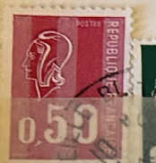
| SOURCE | TITLE| IMAGE MATCH | click to source page |
| eBay | France Yvert Num 1816 Bequet 1974 | eBay | 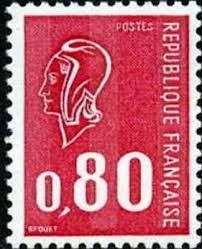 |
| HipStamp | France 1971 Sc#1293c, SG#1905 50c Red Marianne by Bequet USED. | Europe - France & Colonies, General Issue Stamp / HipStamp | 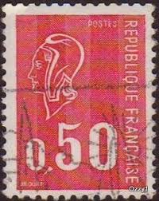 |
| eBay | Machine Cancel Multiple Stamps for sale | eBay | 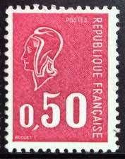 |
| eBay | France - 1971 New Marianne Type - Fluorescent Paper | eBay | 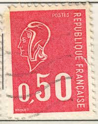 |
| eBay | Francaise Stamp for sale | eBay | 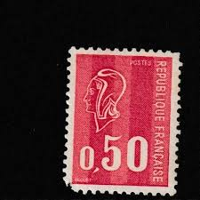 |
| HipStamp | France 1294b Marianne 1974 | Europe - France & Colonies, General Issue Stamp / HipStamp | 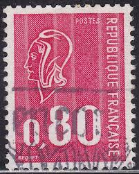 |
| Shutterstock | 1+ Thousand Postal Emblem France Royalty-Free Images, Stock Photos & Pictures | Shutterstock | 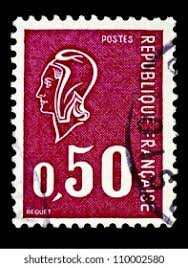 |
| efilatelija.lt | Cyprus stamps (1986) for sale. Nature Conservation: mufflon, flamingos | 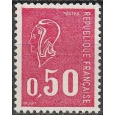 |
| spipfactory.fr | Varieties - [Etude monographique du 0,50F Marianne de Béquet] |  |
| iStock | French Postage Stamp Stock Photo - Download Image Now - Antique, Black Background, Collection - iStock | 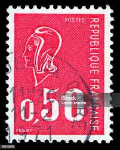 |
| Dreamstime.com | French Marianne with a Phrygian Cap Stock Photo - Image of liberty, symbol: 221670762 | 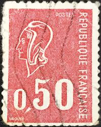 |
| Find Your Stamps Value | Marianne (by Bequet) 45c Sky blue stamp price, value | 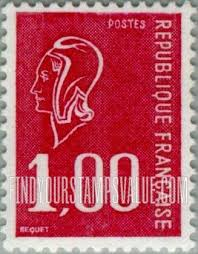 |
| Dreamstime.com | French Stamp from the Freedom Series by Pierre Gandon Editorial Stock Image - Image of freedom, painter: 210319824 | 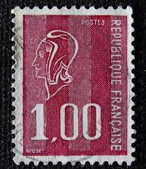 |
| Todocolección | ❤️ sello marianne type bequet - 1971 - francia, - Compra venta en todocoleccion | 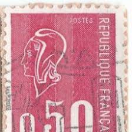 |
| Dreamstime | Image of Marianne a National Emblem of France and an Allegory of Liberty and Reason Editorial Stock Image - Image of paper, letter: 218102499 | 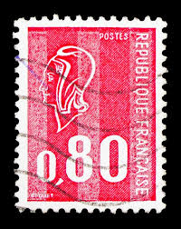 |
| allnumis.com | 0.80 Franc - Marianne type Bequet, Marianne-Liberté-Sabine-Semeuse - France - Stamp - 51382 | 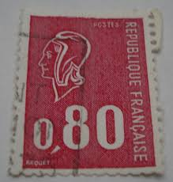 |
| Blogger.com | Blog philatélie: Les poincons de l'histoire | 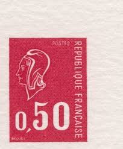 |
| Bob Shop | France & Colonies - FRANCE 1971 Famous Frenchmen UMM SET CV R107.10 SG 1913-18 was listed for 0.00 on 19 Jul at 09:46 by trevorfrsr in Durban (ID:647107880) | 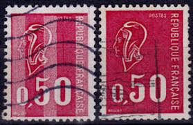 |
| Todocolección | Sellos Antiguos de Francia | página 24 | Compra venta en todocoleccion | 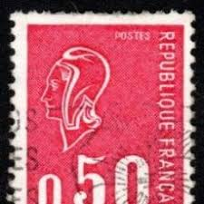 |
| Shutterstock | Vintage French Stamps: Over 8,045 Royalty-Free Licensable Stock Photos | Shutterstock | 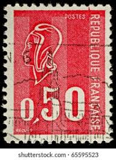 |
| ebid.net | France 1971 - 0.50f red - Marianne - used 14 on eBid United States | 214829989 | 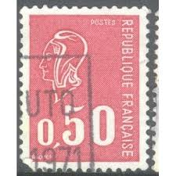 |
| archives-wikitimbres.fr | Timbres imprimés sur les presses TD6 - [Etude monographique du 0,50F Marianne de Béquet] | 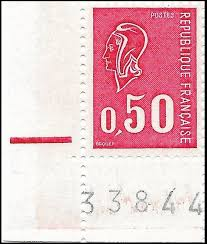 |
| Shutterstock | France-circa 1971a Stamp Printed France Shows Stock Photo 2680809897 | Shutterstock | 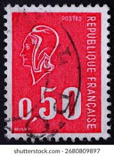 |
| WorthPoint | REUNION - 360 - 372 - MNH - 1967-71 - (9 SETS) - VALUE & "CFA" ON FRANCE STAMPS | #3825946485 | 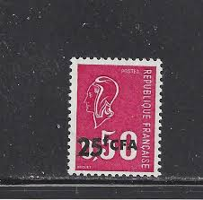 |
| Shutterstock | 3+ Thousand Centims Royalty-Free Images, Stock Photos & Pictures | Shutterstock | 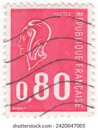 |
| Alamy | Timbre oblitéré Marianne rouge. République Française. Postes. 0,40 Stock Photo - Alamy | 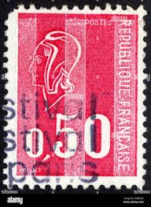 |
| Dreamstime.com | Marianne Type Stock Photos - Free & Royalty-Free Stock Photos from Dreamstime |  |
| HipStamp | France - 1293 - Used - Pair - Scv-0.50 | Europe - France & Colonies, General Issue Stamp / HipStamp | 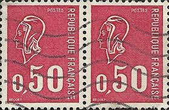 |
| Shutterstock | 13,049 Postage Stamp France Royalty-Free Images, Stock Photos & Pictures | Shutterstock | 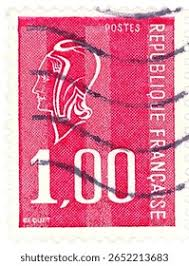 |
| Dreamstime.com | Marianne (Béquet), Serie, Circa 1974 Editorial Stock Photo - Image of postal, women: 141769303 | 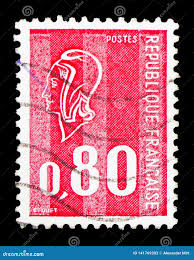 |
| Free | Galerie : 0,50 Marianne de Béquet piquage à cheval sur lettre | 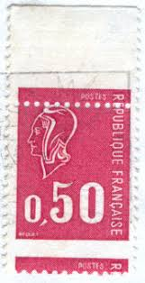 |
| mintindia.in | www.mintindia.in: www.mintindia.in:We have launched this website with primary objective to spread education about various coins of India and around the earth to help each numismatist, Introducing huge collections of the antique material | 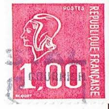 |
| Shutterstock | September 24 2025 Jakarta Indonesia Postage Stock Photo 2687136603 | Shutterstock | 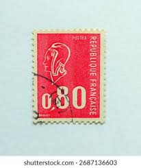 |
| Shutterstock | 1,792 Republic Of France Stamp Royalty-Free Images, Stock Photos & Pictures | Shutterstock | 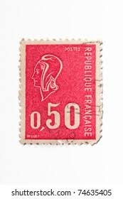 |
| Shutterstock | August 14 2025 Jakarta Indonesia Postage Stock Photo 2668709857 | Shutterstock | 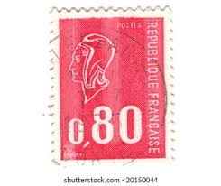 |
| Alamy | Marianne type bequet hi-res stock photography and images - Alamy | 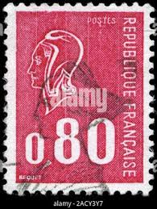 |
| Shutterstock | PARÍS FRANCIA CIRCA 1976: Francia Sello Foto de stock 2652213683 | Shutterstock | 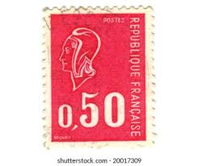 |
| eBay | France Yvert Number 1895 ** Roulette Bequet 1976 | eBay | 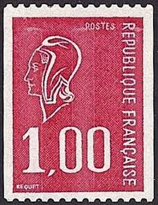 |
| eBay | Stamp / France New Luxury No. 1816 ** Marianne de Becquet | eBay | 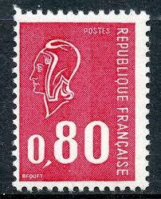 |
| Shutterstock | September 24 2025 Jakarta Indonesia Postage Stock Photo 2687136599 | Shutterstock | 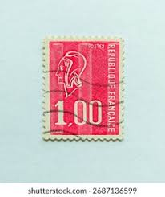 |
| eBay | DEFINITIVES MARIANNE 25FR VF MNH FRANCE CFA K1 | eBay | 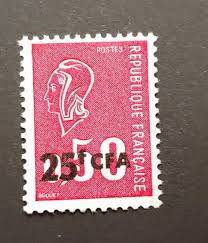 |
| eBay | FRANCE FRANKREICH DEFINITIVE YVERT 1816 VF MNH K1 | eBay | 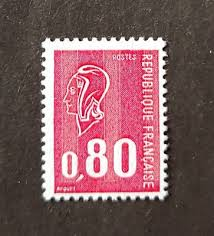 |
| Shutterstock | 3+ Hundred Fraternity Stamp Royalty-Free Images, Stock Photos & Pictures | Shutterstock | 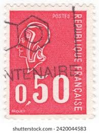 |
| eBay | France 1974 MNH Mi A1889 y Marianne ** with Phosphor Tagging ** | eBay | 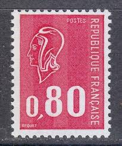 |
| POSTES 15 1 MULLEK 13ld REPUBLIQUE FRANCAISE POSTED H គគគគយមគពរន REPUBLIQUE 100 BEQUET FRANÇAISE FRAN | 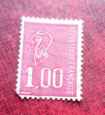 | |
| Alamy | 1f 1.00 Postes Republique Francaise BEQUET face pink red Stamp Stock Photo - Alamy | 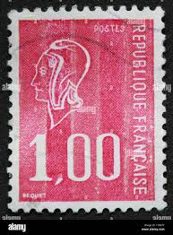 |
| eBay | FRANCE 2021, 1 timbre 50 ANS MARIANNE BEQUET ROUGE PRIO, neuf**, MNH | eBay | 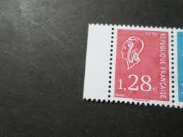 |
| eBay | France 1971 MNH Mi 1735xy Sc 1293 Marianne / with & without phosphor lines ** | eBay | 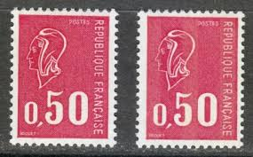 |
| archives-wikitimbres.fr | Stamps printed on TD6 presses | 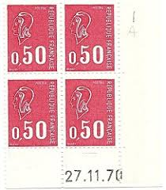 |
| Dreamstime.com | Marianne (Béquet), Serie, Circa 1977 Editorial Photography - Image of figure, 1977: 141770187 | 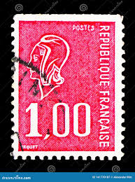 |
| archives-wikitimbres.fr | Variétés - [Etude monographique du 0,50F Marianne de Béquet] | 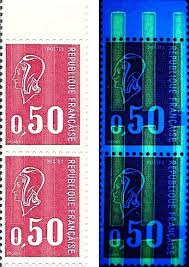 |
| ebid.net | France 1976 - 1.00f red - Marianne - used 2 on eBid United States | 214812731 | |
| eBay | Variety Without Phosphorus - Marianne By Becquet No. 1816a Glossy Gum Block Of 4 | eBay | |
| ebid.net | France 1974 - 0.80f red - Marianne - used on eBid United States | 214812734 | |
| SambaFunk! | Postage Stamps France 1956 Day The Stamp Complete Issue - Unmounted Mint Never Hinged Collection France 1956 Collection Mint Never Hinged | |
| eBay | France Stamp Marianne De Bequet N°1664B Red Number On The Back Mint ** Luxe MNH | eBay | |
| What does the 'vl' mean on a Malawi 1994 stamp? | ||
| Shutterstock | France Circa 1991 Stamp Printed France Stock Photo 1666112605 | Shutterstock | |
| eBay | France 1971-74 Sc # 1293-94B MNH OG | eBay | |
| been collecting stamps falling out of books at work, highly doubt theyre worth anything but asking here Just In Case before i glue them into my journal : r/askStampCollectors |